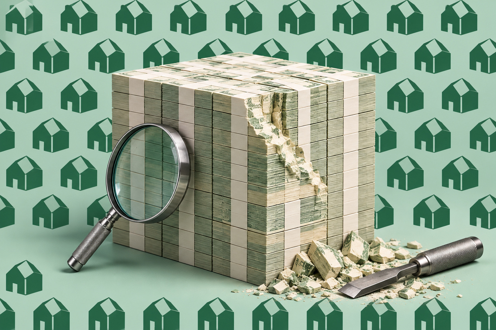

Eine Anschlussfinanzierung brauchen Sie, wenn Ihre Zinsbindung endet und das Darlehen noch nicht abbezahlt ist. Planen sollten Sie sie drei bis fünf Jahre vor Ablauf, weil Sie sich den Zins über ein Forward-Darlehen bis zu 60 Monate im Voraus sichern können. Entscheidend ist die Restschuld, denn sie bestimmt, wie stark sich ein neuer Zins auf Ihre Monatsrate auswirkt.
Das Wichtigste in Kürze
- Die Restschuld bestimmt, wie stark ein neuer Zins Ihre Rate verändert.
- Planen Sie drei bis fünf Jahre vor Ablauf. Forward-Darlehen sind bis zu 60 Monate vorher möglich.
- Beispiel: Ein Darlehen von 2016 zu 1,6 Prozent kostet bei 4,2 Prozent Anschlusszins 262 Euro mehr im Monat, wenn der Eigentümer weiter 2 Prozent tilgt.
Der Zeitplan bis zum Ablauf der Zinsbindung
Was in welchem Abstand zum Ablauf zu tun ist. Station anklicken.
1,6 %, Rate 750 €
4,2 %, Rate 1.011,72 €
Beispiel: 250.000 € Darlehen von 2016, Restschuld 195.817 €, weiter 2 % Tilgung, Anschlusszins 4,2 % als Beispielzins · Grafik: Fischer & Geserich
Warum die Restschuld die zentrale Größe ist

Am Ende der Zinsbindung zählt vor allem der Betrag, den Sie der Bank dann noch schulden. Auf diese Restschuld wird der neue Zins berechnet. Jeder Prozentpunkt Zinsänderung wirkt also nur auf den Teil des ursprünglichen Darlehens, der noch übrig ist.
Je niedriger die Restschuld, desto weniger kann Ihnen ein Zinsanstieg anhaben. Bis zum Ablauf können Sie die Restschuld noch beeinflussen, über Sondertilgungen oder eine höhere Tilgung, sofern Ihr Vertrag das vorsieht. Wer das Ende seiner Zinsbindung kennt, hat dafür Jahre Zeit. Wen erst das Schreiben der Bank daran erinnert, dem bleiben wenige Monate.
Die genaue Restschuld zum Ablauf der Zinsbindung finden Sie in Ihrem Tilgungsplan oder in der jährlichen Kontomitteilung der Bank. Fehlt beides, nennt Ihnen die Bank die Zahl auf Anfrage.
Rechenbeispiel: Was ein Zinswechsel heute bedeutet
Viele Darlehen, deren Zinsbindung jetzt endet, stammen aus einer Zeit sehr niedriger Zinsen. Für ihre Eigentümer ist das Thema deshalb dringend.
Ein Darlehen über 250.000 Euro wurde 2016 mit 10 Jahren Zinsbindung zu 1,6 Prozent und 2 Prozent anfänglicher Tilgung abgeschlossen. Die Monatsrate beträgt 750 Euro. Nach 10 Jahren sind 54.183 Euro getilgt, die Restschuld beträgt 195.817 Euro.
Für die Anschlussfinanzierung nehmen wir einen Beispielzins von 4,2 Prozent an, keine aktuelle Kondition.
| Bisher | Anschluss, gleiche Rate | Anschluss, 2 % Tilgung | |
|---|---|---|---|
| Zins | 1,6 % | 4,2 % | 4,2 % |
| Monatsrate | 750,00 € | 750,00 € | 1.011,72 € |
| davon Zinsen im Monat des Wechsels | 261,09 € | 685,36 € | 685,36 € |
| Restlaufzeit bis zur vollständigen Tilgung | rund 58 Jahre | rund 27 Jahre |
Behält der Eigentümer seine Rate von 750 Euro bei, fließen davon 685 Euro in Zinsen und nur noch 65 Euro in die Tilgung. Das Darlehen wäre erst nach rund 58 Jahren abbezahlt. Will er weiter mit 2 Prozent tilgen, steigt die Rate um 262 Euro auf 1.011,72 Euro, ein Plus von 35 Prozent.
Die Anschlussfinanzierung ist deshalb eine eigene Finanzierungsentscheidung. Gut treffen lässt sie sich nur mit genügend Vorlauf.
Welche Wege zur Anschlussfinanzierung gibt es?
Ihre bisherige Bank bietet Ihnen eine Verlängerung zu neuen Konditionen an, meist drei bis sechs Monate vor Ablauf. Das ist der bequemste Weg, weil die Bank keine neuen Unterlagen prüft und keine Grundschuld übertragen werden muss. Es ist aber nicht automatisch der günstigste, denn die Bank weiß, dass viele Kunden das erste Angebot unterschreiben.
Sie wechseln zum Ablauf der Zinsbindung zu einer anderen Bank. Das neue Darlehen löst das alte ab, die Grundschuld wird an die neue Bank abgetreten. Dafür fallen Notar- und Grundbuchkosten an, die sich nach der Höhe der Grundschuld richten. Eine Vorfälligkeitsentschädigung fällt zum regulären Ende der Zinsbindung nicht an. Ein Zinsunterschied von wenigen Zehntelprozentpunkten gleicht die Wechselkosten bei den meisten Darlehenshöhen schnell aus.
Sie schließen die Anschlussfinanzierung bis zu 60 Monate vor Ablauf ab und sichern sich damit schon heute den Zins für die Zeit nach dem Ablauf. Dafür zahlen Sie einen Aufschlag pro Monat Vorlaufzeit. Das lohnt sich, wenn Sie steigende Zinsen erwarten oder schlicht kein Risiko eingehen wollen. Fallen die Zinsen danach, profitieren Sie davon nicht, denn das Forward-Darlehen müssen Sie abnehmen.
Der Zeitplan bis zum Ablauf der Zinsbindung
Fünf Jahre vorher. Restschuld zum Ablauf ermitteln und prüfen, ob Sondertilgungen möglich sind. Ab jetzt sind Forward-Darlehen bei vielen Banken grundsätzlich möglich.
Drei Jahre vorher. Zinsentwicklung beobachten und erste Angebote einholen. Der Forward-Aufschlag ist noch spürbar, sinkt aber mit jedem Monat.
Zwölf Monate vorher. Der Aufschlag ist jetzt niedrig. Spätestens hier sollte feststehen, ob Sie absichern, wechseln oder auf das Angebot der Hausbank warten.
Drei bis sechs Monate vorher. Das Prolongationsangebot der Bank kommt. Vergleichen Sie es mit externen Angeboten, bevor Sie unterschreiben. Eine Umschuldung braucht wegen Bewertung und Grundschuldabtretung einige Wochen Vorlauf.
Was die Bank bei der Anschlussfinanzierung neu prüft
Bei einer Prolongation verzichten Banken meist auf eine vollständige Prüfung. Bei einer Umschuldung prüft die neue Bank dagegen wie bei einer Erstfinanzierung: Einkommen, bestehende Verbindlichkeiten und den Wert der Immobilie. Hat sich der Beleihungsauslauf durch Tilgung und Wertentwicklung verbessert, sind bessere Konditionen möglich. Hat sich der energetische Zustand als Problem herausgestellt oder ist das Einkommen gesunken, kann es umgekehrt schwieriger werden. Auch das spricht dafür, früh anzufangen.
Die Einschätzung von Fischer & Geserich
Wir sehen bei Anschlussfinanzierungen vor allem einen Fehler. Eigentümer unterschreiben das Angebot der Hausbank, weil es bequem ist und die Frist drückt. Mit drei Jahren Vorlauf stehen alle Wege offen, mit drei Monaten Vorlauf meistens nur noch das Angebot der eigenen Bank. Den genauen Zeitpunkt für ein Forward-Darlehen entscheiden wir mit unseren Kunden anhand des Zinsabstands zwischen den Laufzeiten und der Höhe der Restschuld.
Häufige Fragen
Wann sollte ich mich um die Anschlussfinanzierung kümmern?
Am besten drei bis fünf Jahre vor Ablauf der Zinsbindung. Ab 60 Monaten vorher sind Forward-Darlehen bei vielen Banken möglich, und Sie haben genug Zeit, Angebote zu vergleichen. Spätestens zwölf Monate vorher sollte die Entscheidung vorbereitet sein.
Was ist der Unterschied zwischen Prolongation und Umschuldung?
Bei der Prolongation verlängern Sie Ihr Darlehen bei der bisherigen Bank zu neuen Konditionen, ohne dass die Grundschuld übertragen wird. Bei der Umschuldung wechseln Sie zum Ablauf der Zinsbindung zu einer anderen Bank. Dafür fallen Notar- und Grundbuchkosten für die Abtretung der Grundschuld an, aber keine Vorfälligkeitsentschädigung.
Wie stark steigt meine Rate bei einer Anschlussfinanzierung?
Das hängt von der Restschuld und vom Zinsunterschied ab. Beispiel: Bei 195.817 Euro Restschuld steigt die Rate bei einem Wechsel von 1,6 auf 4,2 Prozent und gleichbleibenden 2 Prozent Tilgung von 750 auf 1.011,72 Euro im Monat.
Fällt bei einer Umschuldung eine Vorfälligkeitsentschädigung an?
Nicht, wenn Sie zum regulären Ende der Zinsbindung wechseln. Eine Vorfälligkeitsentschädigung kann nur anfallen, wenn Sie das Darlehen während der laufenden Zinsbindung ablösen. Nach 10 Jahren ab vollständiger Auszahlung haben Sie nach § 489 BGB zudem ein Kündigungsrecht mit sechs Monaten Frist.
Quellen
Das Titelbild und die Bilder ohne Eintrag unter Bildnachweise wurden mit KI erstellt.
Der Beitrag dient der allgemeinen Information und ersetzt keine Rechts-, Steuer-, Finanzierungs- oder Anlageberatung. Zinssätze in Beispielrechnungen sind Beispielwerte, keine aktuellen Konditionen.